Home / Jame-ul-Uloom Group of Institutions
Institutions
The 14 educational institutions operated by the Jamia Masjid & Muslim Charitable Fund Trust.
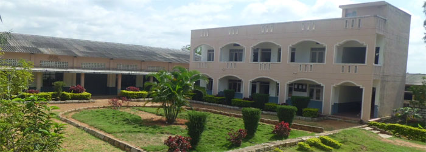
Vocational training
Industrial Training Institute (ITI)
Shikshanagar campus (27th km off the Bangalore–Mysore Highway); Fitter, MRAC & MMV trades.
Explore institution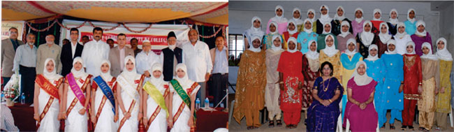
Pre-University
Pre University College for Girls
Pre-University education for girls (Science PCMB and Commerce combinations) at S.J.P. Road, City Market (Ph: 0826705591).
Explore institution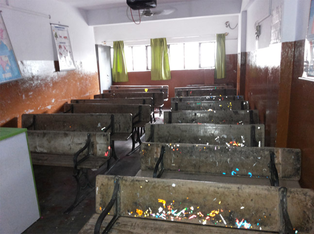
Degree college
Degree College for Girls (B.Com)
Bachelor of Commerce programme for women (Ph: 0826709915).
Explore institution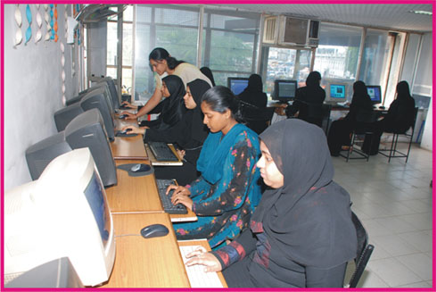
Degree college
Bachelor of Computer Application (BCA)
Bachelor of Computer Application college for girls, “at an arms length from the Jamia Mosque” (original wording).
Explore institution
Residential school
Boys Residential Higher & Primary School, Banikuppa
Residential campus on the Bangalore–Mysore Highway.
Explore institution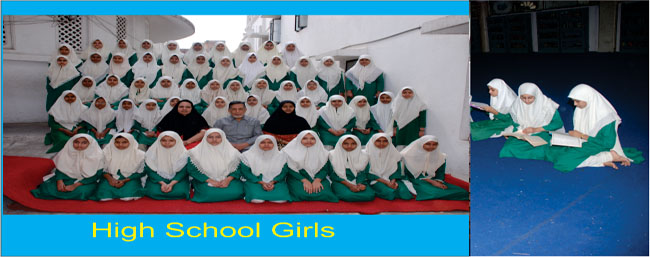
High school
English Girls High School
High school for girls, started in 1990-91 with 13 girls (as printed on the school’s original page).
Explore institution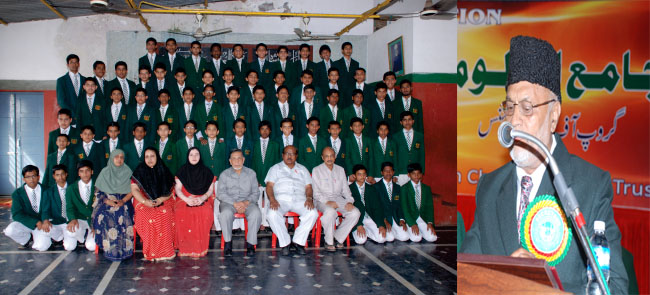
High school
English Boys High School
High school for boys at Ibrahim Ali Shah complex, S.P. Road (Boys Block Ph: 0822221726).
Explore institution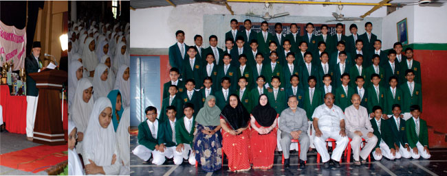
Primary school
English Higher Primary School
Primary school from 1st to VII standard, three sections in each class.
Explore institution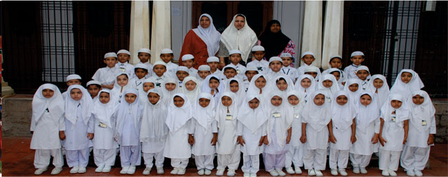
Nursery
English Nursery School
Nursery school; moral education and the learning of Hadiths begin at this stage.
Explore institution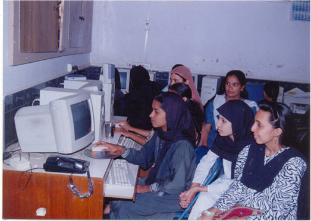
Computer training
MMI-NCPUL Computer Centre
One-year computer applications and multilingual DTP course, mainly for girls (Ph: 0822221158).
Explore institution
Vocational training
Tailoring School for Women
The Tailoring Department of Jamia Masjid: girls learning the art of tailoring.
Explore institution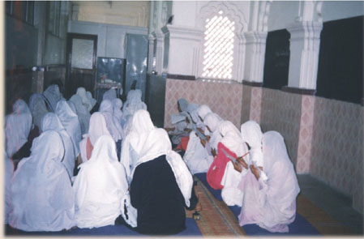
Department
Calligraphy
Urdu language and Urdu calligraphy centre run at the Jamia Masjid premises.
Explore institution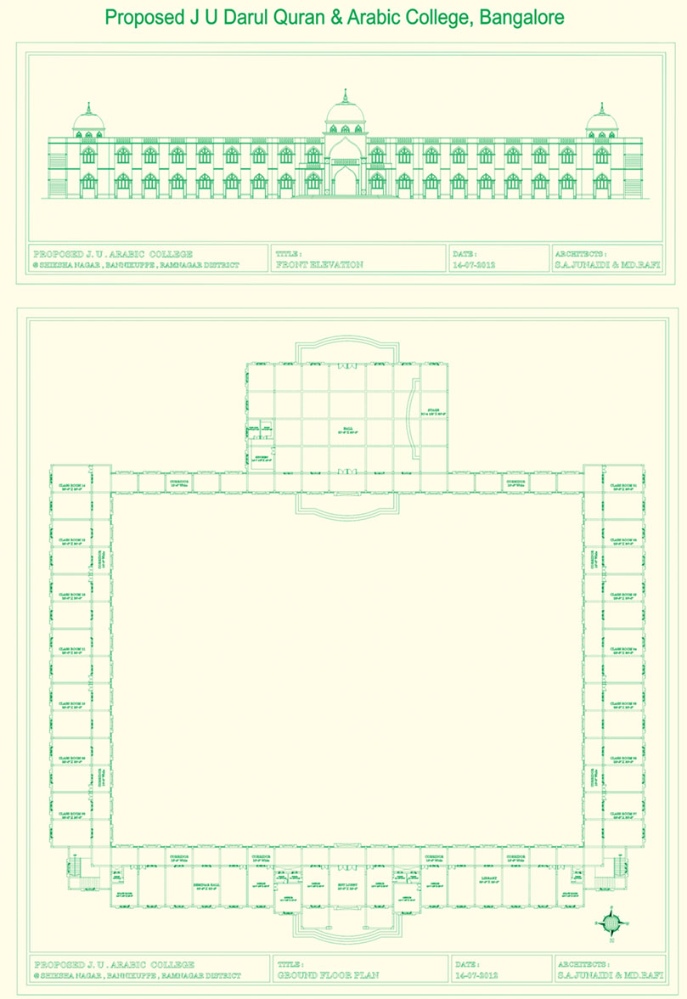
Quranic studies
Shoba-e-Hifz
The Hifz section: Hafiz and Hafiza classes for boys and girls.
Explore institutionIslamic scholarship
Shoba-e-Alimiyath
J.U Darul Quran Arabic College: Arabic studies at the Bannikuppa campus (proposed building).
Explore institution
Photographs on the cards are authentic photographs of each institution from the original site. Where the original published no photograph of the institution itself, the card shows the closest authentic image (the proposed-building drawing for the Shoba sections).
Welcome to the Jame ul uloom Group of Institutions
I am glad that Jame-ul-uloom English Nursery, Primary and High School, Bangalore is bringing out a school website.
Mr. K. Rahman KhanGreeting printed on the original Institutions page. His signed letter of 15 February 2011, about the school magazine, is on the Recognitions page.
Jame-ul-uloom is an Arabic name meaning “Center of Knowledge”. Jame-ul-uloom is housed in the campus of Jamia Mosque, one of the biggest mosques in the state, located in the heart of the Bangalore City. Apart from imparting education, the Institution aims at “character building”. This is achieved through moral education and religious instruction.
Upliftment of the downtrodden in the Minority Community is the aim of Jame-ul-uloom. It also aims in preparing good and useful citizens, so that they can face the situations in this world of competition. To accomplish many such purposes, Jame-ul-uloom has in its fold institutions.
The Trust
JAMIA MASJID & MUSLIM CHARITABLE FUND TRUST (JM&MCF) is one of the reputed trust. Established in the year 1939 with a mission to support the nation by educating people and to create good society. The trust with a core mission to establish a world class university has started schools, colleges in and around Bangalore.
The Trust’s introductionAs printed on the original Institution page. The year is the one that page gives; other pages of the original site give other years (see About Us).
More about Jamia Masjid and the Trust’s charitable activity → · About Us →